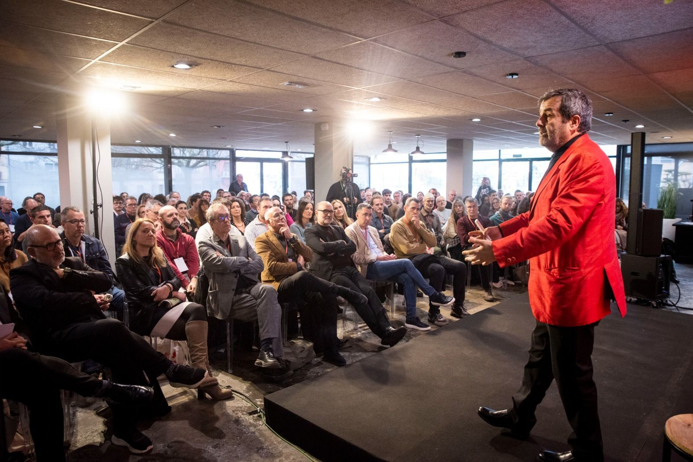
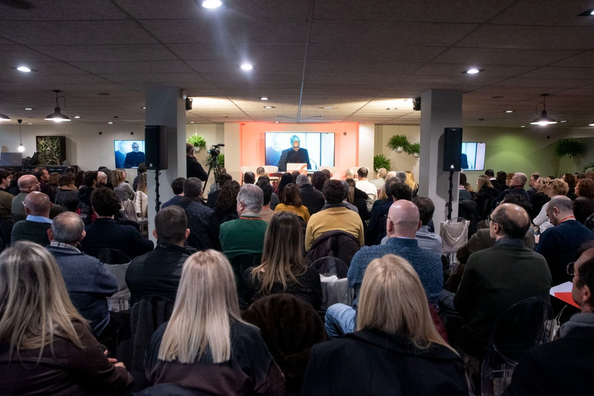
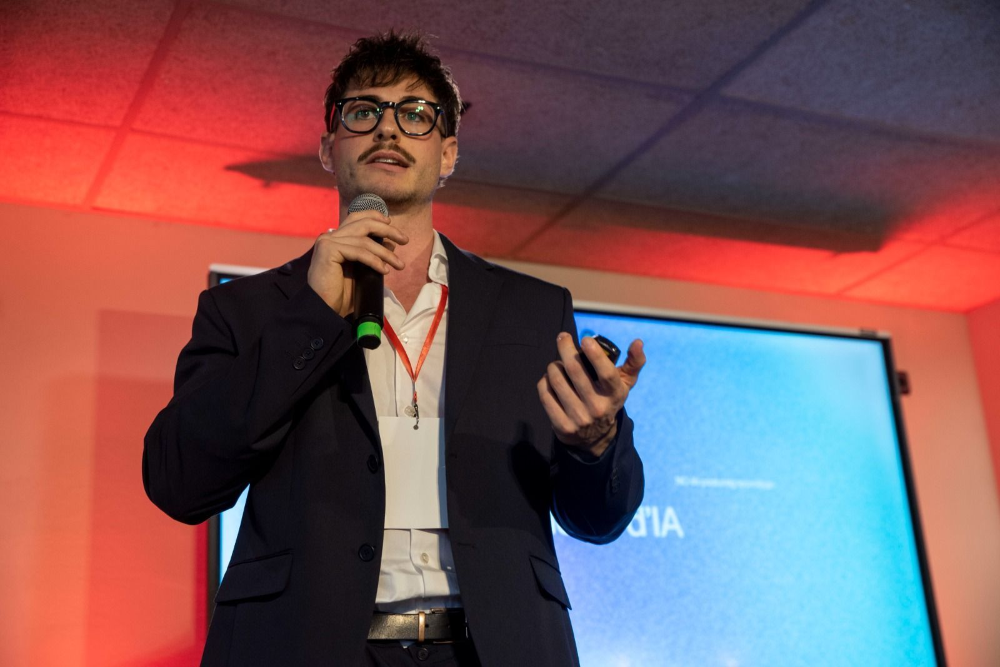
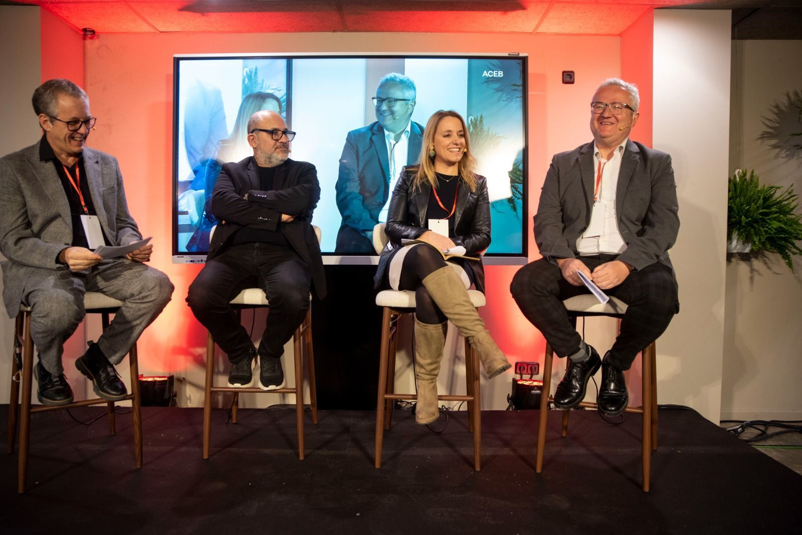
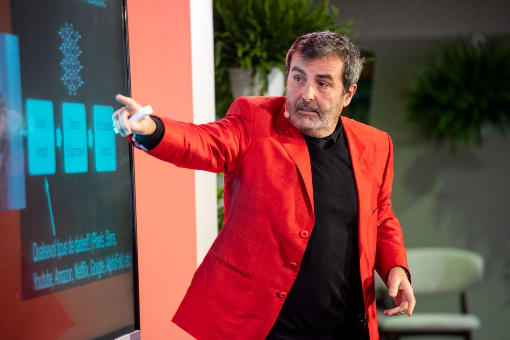
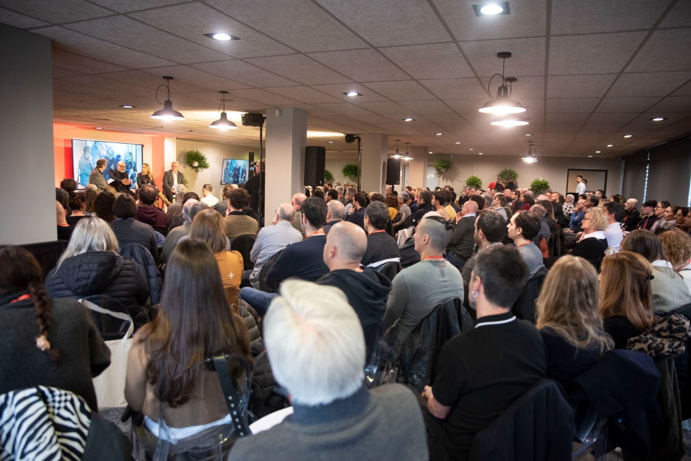

At NeumaCare, we are proud to have taken part in a high-impact discussion on the role of artificial intelligence in healthcare, within the framework of a session organised by ACEB Berguedà. This event brought together leading voices from across sectors to explore how AI is already transforming the present — and how it can shape a more human future.

Artificial Intelligence As A Driver Of Human-Centered Care
During the session, we had the opportunity to present our perspective on one of the most relevant challenges in modern healthcare: how to ensure that technological progress translates into more humane, patient-centred care.
At NeumaCare, we defend a clear position — AI should not distance us from patients, but bring us closer to them. Our approach focuses on developing an intelligent system capable of adapting environmental stimuli in real time, based on the physiological and emotional state of the patient. By integrating clinical data, real-time biomarkers, and historical responses, we aim to create environments that respond dynamically to individual needs.


Sharing The Stage With Leading Thinkers
The event gathered more than 230 attendees and featured an exceptional lineup of speakers across different domains of artificial intelligence. It was an honour to share the stage with renowned figures such as Xavier Sala-i-Martin, as well as other leading professionals who are actively shaping the future of AI and innovation.
Moments like these go beyond professional exposure — they represent personal milestones. Sharing space with individuals who have influenced the way we understand complex systems is both inspiring and grounding.

A Cross-Sector Perspective On AI
One of the strengths of the session was its multidisciplinary nature. From industrial applications and data-driven decision-making to startup innovation, the event showcased how AI is being applied across diverse sectors.
Within this context, bringing the conversation into healthcare — and specifically into the humanisation of care — allowed us to contribute a differentiated perspective, highlighting the importance of designing systems that are not only efficient, but also empathetic and responsive.
From Vision To Implementation
Our participation also served to reinforce the technological direction of NeumaCare. We are actively developing an AI engine capable of orchestrating environmental conditions based on patient data, moving from reactive care models toward preventive and adaptive systems.
This vision aligns with a broader shift in healthcare: understanding the environment as a clinical variable that can — and should — be measured, analysed, and optimised.


Acknowledgments And Forward Outlook
We would like to thank ACEB Berguedà for organising a session of such quality and relevance, and for creating a space where meaningful discussions about the future of AI can take place.
A special thanks as well to all the speakers and attendees who contributed to a rich and inspiring exchange of ideas.
"At NeumaCare, we remain committed to our mission: leveraging technology to design more human, intelligent, and responsive healthcare environments."
— NeumaCare Team